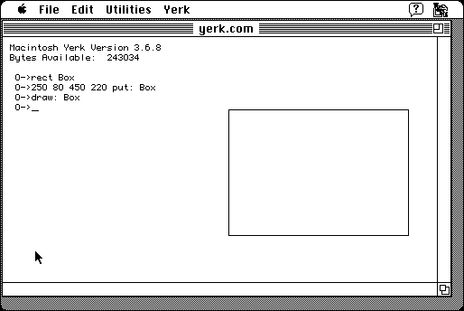

Download
Yerk_3.68.zip (479K) Yerk 3.6.8 repackaged into a zipped hfs disk image and checksum file. The disk image can be mounted with Mini vMac.
Yerk_3.68.sea.bin (532K) Yerk 3.6.8 in the original format.yerkManual3.67.zip (479K) Yerk 3.6.7 Manual repackaged into a zipped hfs disk image and checksum file. The disk image can be mounted with Mini vMac.
yerkManual3.67.sea.bin (549K) Yerk 3.6.7 Manual in the original format.
copyright: Yerkes Observatory
mod date: Nov 26, 1995
license: free for scientific and education purposes
from url :
Yerk
An "object oriented language based on a Forth Kernel", based on "Neon" from Kriya Systems. 'About' menu command crashes.

If you find these downloads useful, please consider helping the Gryphel Project, which hosts them.
Here are the md5 checksums for the downloads, signed with Gryphel Key 5:
--------- GRY SIGNED TEXT --------- 0935c6ce324fc17ca9eebbcf779e16e4 Yerk_3.68.zip 554a55283e14ca062b3b2b4844d789a3 Yerk_3.68.sea.bin 17b027c13f5451e95477be405e0ceefc yerkManual3.67.zip a70e4cbeee6d3f84df2c9308a0c09929 yerkManual3.67.sea.bin ------- BEGIN GRY SIGNATURE ------- Gry/4Xa8CFcUzxdN/J2933700PHyn4DBvGXl2lvFK06U3O9mv8iC6+lvRIEMWITI iWO7X8eSVOMysKGS8LCBwvpePqTXBTW72VZJrEXvibwPUT+LSqJvm5/gCW+SvJFd Id/1o6wCkRkiu9CWSdQ8fPk7egRVWzEL4Eli8lA97RSL5Q84HNCeV1BSkshXubp0 -------- END GRY SIGNATURE --------